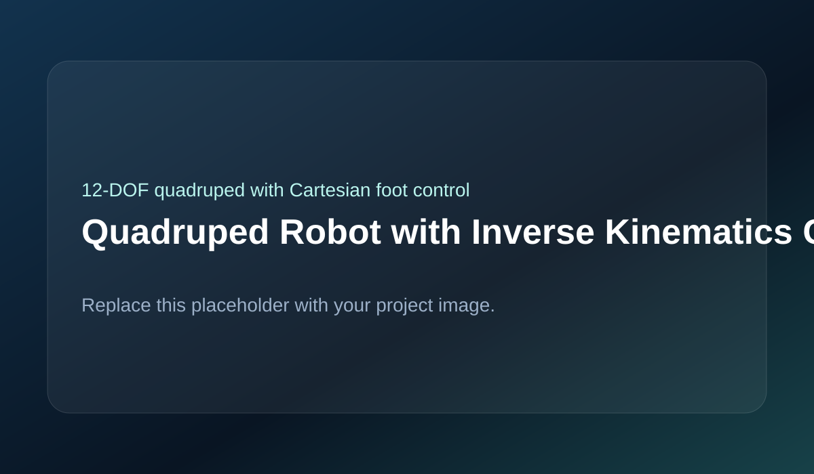

Designed and built a 12-DOF quadruped robot using analytical inverse kinematics to enable position-level foot control, body pose transformations, and IMU-based orientation sensing.

The robot consists of four legs with three servos per leg for hip yaw, hip pitch, and knee motion, giving twelve total degrees of freedom. Analytical inverse kinematics computes joint angles from desired foot positions in Cartesian space. Body-frame translation and rotation logic adjusts leg targets to preserve ground contact during posture changes. An ESP32 acts as the embedded controller while a connected PC supports debugging and high-level command input.
Analytical inverse kinematics was used instead of lookup tables to reduce computational overhead and improve scalability. Body motion was structured as transformations in the body frame before mapping into individual leg frames, making posture control cleaner. Servo update timing was arranged carefully to reduce jitter across all twelve channels.
The main challenges included deriving the 3-DOF IK equations correctly, handling unreachable target positions and singularities, compensating for mechanical backlash, working within servo torque limits, synchronizing twelve servos smoothly, and filtering IMU noise for useful orientation data.
The final platform achieved a stable static stance with adjustable body height, controlled roll and pitch body adjustments, Cartesian foot positioning without manual angle tuning, synchronized twelve-servo motion, and validated IMU integration.